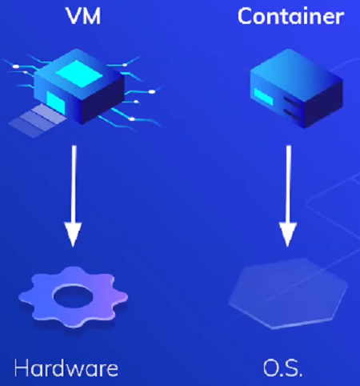
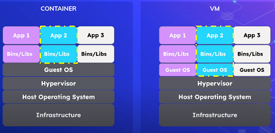

<div class="container">
<table class="table table-striped table-hover table-bordered align-middle">
  <thead>
    <tr>
      <th scope="col">Referencia</th>
      <th scope="col">Descripcion</th>
      <th scope="col">Ejemplo</th>
    </tr>
  </thead>
  <tbody>
    <tr>
      <td>Docker</td>
      <td>
        * Nos permite empaquetar aplicaciones para desplegar en cualquier entorno. Ya que implementa una <strong>API de alto nivel</strong> para proporcionar contenedores livianos que ejecutan procesos de manera independiente <br>
        * Con Docker los recursos pueden ser aislados, los servicios restringidos. <br>
        * Se otorga a los procesos la capacidad de tener una vision completamente privada del <strong>Sistema Operativo.</strong><br>
        * Con su propio identificador de espacio de proceso, sistema de archivos e interfaces de red. <br>
        * Contenedores multiples comparten el mismo nucleo, pero cada contenedor puede ser restringido a utilizar sola una cantidad definida de recursos. <br>
        * El fichero de definicion es <strong>Dockerfile</strong> contiene las instrucciones del como es el contenedor <strong>(Sistema base, Contenido, paquetes, librerias y el comportamiento una vez lanzado)</strong><br>
        * la imagenes de Docker son las <strong>plantillas base</strong> desde donde se inicia, ya sea para <strong>Crear nuevas imagenes o para crear contenedores para ejecutar las aplicaciones </strong><br>
        * <strong>Registro Docker (https://hub.docker.com/)</strong> es un repositorio de imagenes de Docker. <br>
        * <strong>Docker Store</strong> es un repositorio para mas coorporativo <br>
        * Un <strong>Contenedor docker </strong> es el resultado de poner en marcha una imagen
      </td>
      <td>
        Diferencias entre Maquina Virtual y Docker <br><br>
        *Una Maquina Virual Virtualiza el Hardware mientra que el Docker Virtualiza el Sistema Operativo <br><br>
        <br><br>
        * Una Maquina Virtual Ejecuta una copia completa del Sistema Operativo mientras que el Contenedor comparte el <strong>Kernel</strong> del host con otros contenedores. <br><br>Una maquina virtual ... "virtualiza memoria ram, disco duro entre otras cosas" mientras una imagen de docker comparte esos recursos con el host anfirion.
        <br><br>
        * Un contenedor es creado apartir de una imagen o una imagen se convierte en contendor cuando es ejecutada o mejor dicho un contenedor es una instancia de una imagen
      </td>
    </tr>

    <tr>
      <td>Comandos</td>
      <td>
        <strong>En la instalacion:</strong> es posible usar Docker desktop, como por CLI ademas podemos usar la termina del WSL para los contenedores, despues de intalar lo anterior el equipo requiere habilitar la virtualizarcion por <strong>BIOS</strong> para esto ingresar a la configuracion de la BIOS y setear esta opcion <br><br>
        * docker --version //imprimir la version de docker<br>
        * docker history nginx.<br>
        * docker service update --image nginx:1.11 web EOF. <br>
        * docker service create --naem search elasticsearch <br>
        * docker images // ver que imagenes tenemos descagadas <br>
        * docker ps //ver los contenedores creados<br>
        * docker info // ver el detalle del Docker<br>
        * docker rmi -f //eliminar imagenes -f "force" <br>
        * docker build . //crea una imagen <br>
        * docker build sitioweb:latestjuan .//agrega el tag:name como en la imagen adjunta <br><br>
        * docker run -it --rm -d -p 8080:80 --name web sitioweb<br>
        -it = interactivo <br>
        --rm = remove elimina si hay una verion previa del contenedor <br>
        -d = que el contenedor se ejecute en un segundo plano <br>
        -p = indicar que se va a definir el puerto <br>
        8080:80 //el puerto en que <strong>YO</strong> me voy a comunicar con el contenedor:y el contenedor se va a comunicar con el puerto 80 a la aplicacion 
      </td>
      <td>
        desde un archivo <strong>Dockerfile</strong> se correo el comando build para generar <strong>docker image</strong> para despues correr el comando run para finalmente crear el <strong>docker container</strong><br><br><br>
        <br><br>

        <br><br>
      </td>
    </tr>

    <tr>
      <td>tags</td>
      <td>
        A las imagenes que generamos en docker se le pueden agregar <strong>tags</strong> es decir marcas o etiquetas
      </td>
      <td></td>
    </tr>

    <tr>
      <td>Redes</td>
      <td>
        Docker nos permite crear 3 diferentes redes virtuales ya sea para unir o segmentar diferentes Contenedores, de esta manera podemos separar contenedores por seguridad en redes diferente o unirlos por conveniencia, podemos ver las 3 redes con: <br><br>
        <strong>docker network ls</strong><br><br>
        * brigde //por defecto: Puente entre la interfaz de red que arrancamos y una interfaz de red virtual que se crea en nuestro equipo cuando instalamos Docker<br>
        * host //Copia la configuracion de red del host al contenedor que es estamos arrancando con Docker "es la misma"<br>
        * none //Elimina toda la configuracion de red de nuestro contendor y solo tendriamos loopback solo la direccion 127.0.0.1 y no podremos conectar a otro sitio mas <br>
      </td>
      <td></td>
    </tr>

    <tr>
      <td></td>
      <td></td>
      <td></td>
    </tr>

    <tr>
      <td></td>
      <td></td>
      <td></td>
    </tr>
  </tbody>
</table>
</div>
